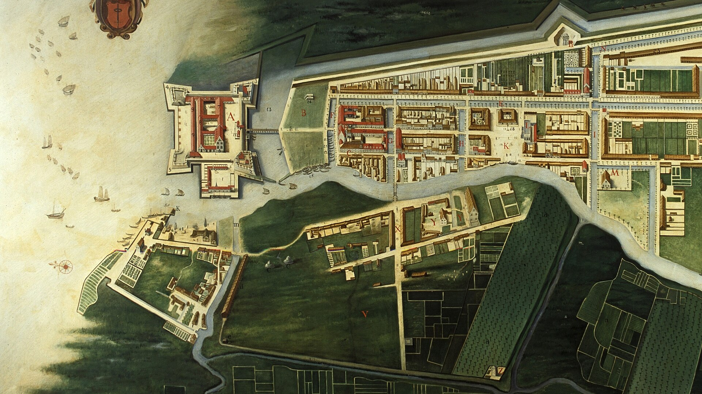
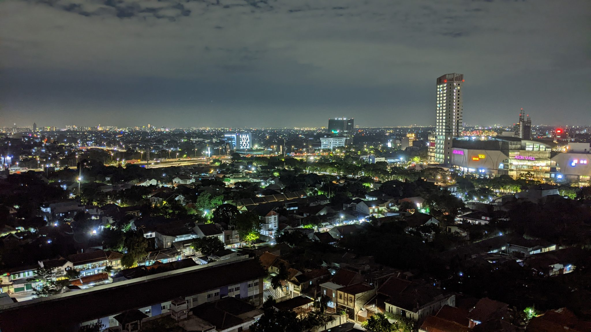
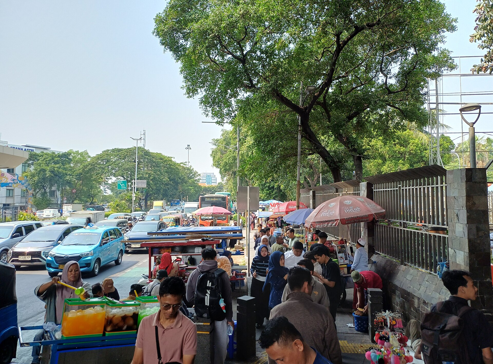
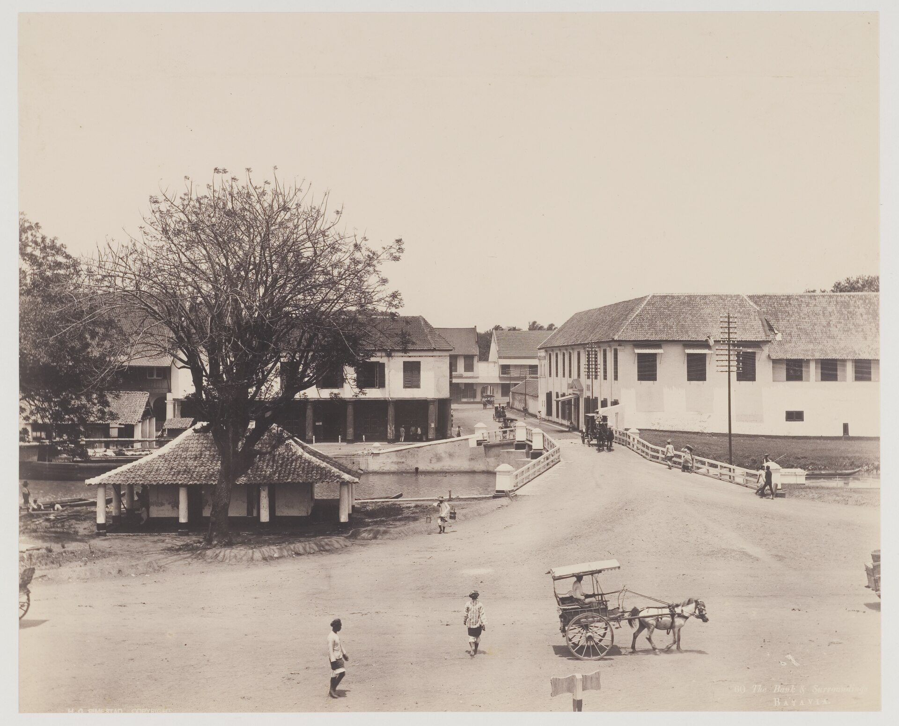
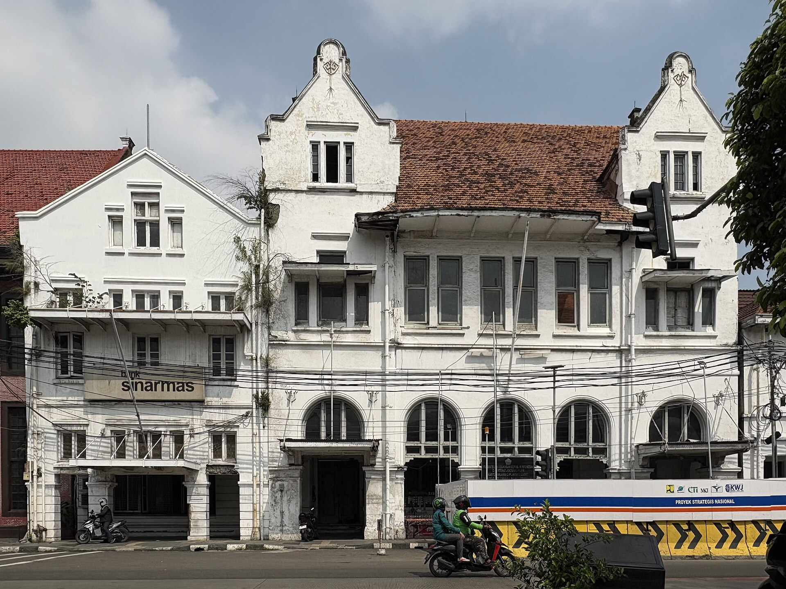
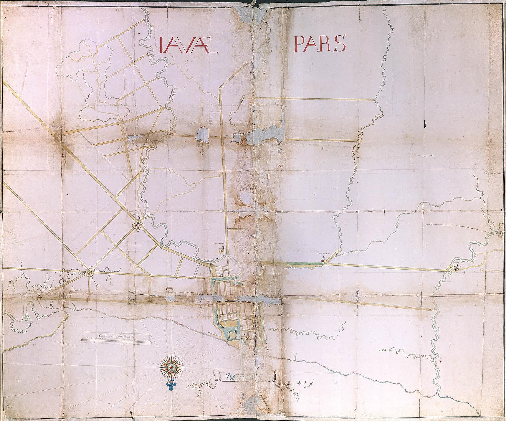
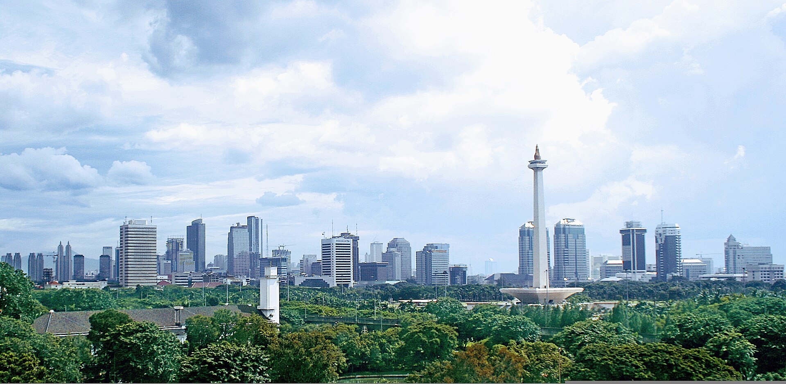

01
Strategi
Kami memetakan ke mana Anda menuju dan apa yang harus benar agar sampai di sana. Hasilnya satu halaman yang bisa Anda serahkan ke tim.

6°13′S · 106°49′E · JAKARTA SELATAN
Konsultan di Jakarta Selatan. Kami membantu klien mengubah pertanyaan sulit menjadi langkah berikutnya yang jelas.
LAYANAN
Empat jalan masuk. Satu jalan keluar: keputusan yang benar-benar bisa Anda jalankan.

Kami memetakan ke mana Anda menuju dan apa yang harus benar agar sampai di sana. Hasilnya satu halaman yang bisa Anda serahkan ke tim.

Bagaimana pekerjaan sampai ke pelanggan Anda — dan langkah mana yang hanya memakan waktu tanpa memberi nilai.


Pilih salah satu untuk melihat dari mana kami akan mulai.
Mulai percakapanJl. Mampang Prapatan Raya No. 73A, Lantai 3, Jakarta Selatan, Indonesia
Buka di petaIDE KAMI
Yasa berarti layanan: kami mulai dari apa yang benar-benar Anda butuhkan. Utama berarti yang terpenting: kami mengutamakan satu hal di atas banyak hal yang bisa menunggu. Kreasi berarti karya: kami meninggalkan sesuatu yang bisa Anda gunakan. Tiga kata, satu cara bekerja.
METODE
Tiga langkah, berurutan. Gulir untuk melaluinya.

Kami menanyakan apa yang benar-benar terjadi, bukan apa yang tertulis di slide.

Kami membandingkan pilihannya dan mengatakan mana yang akan kami ambil.
Kami meninggalkan rencana, urutan langkah, dan tanggal pertama untuk mulai.
TEMUKAN KAMI
PT. Yasa Utama Kreasi
Mampang Prapatan Raya No. 73A
Lantai 3, Jakarta Selatan
Sen–Jum, 09.00–18.00 WIB